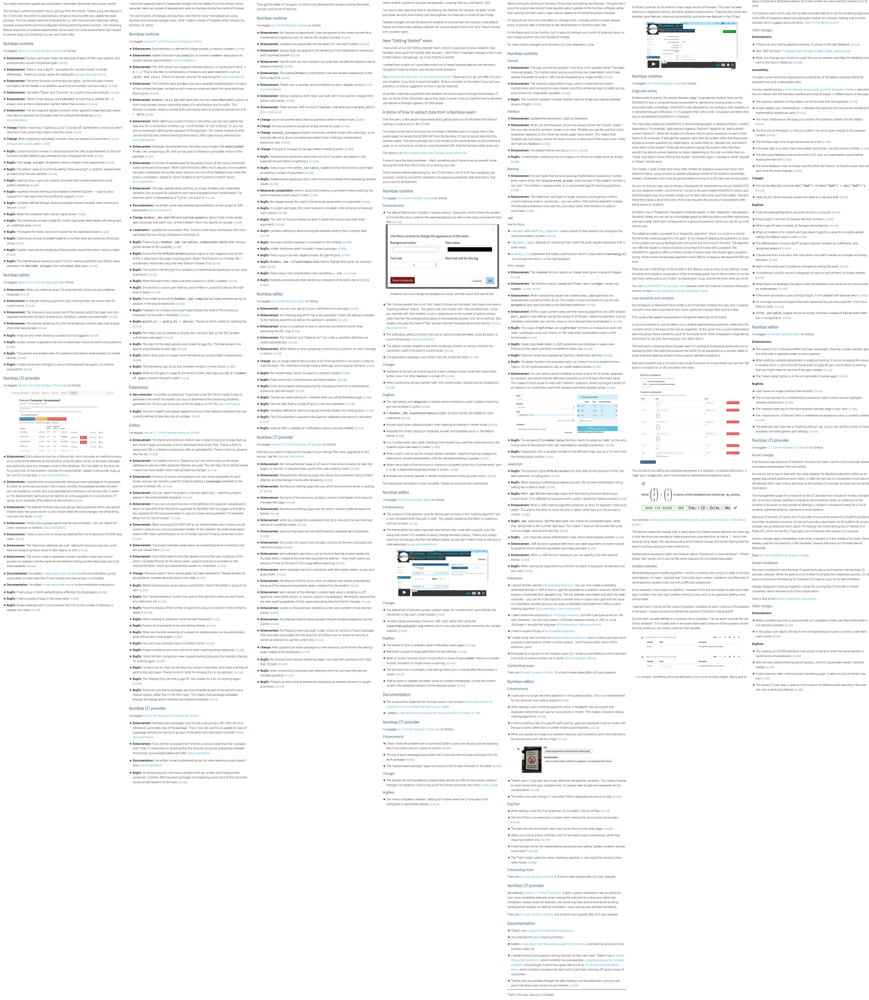
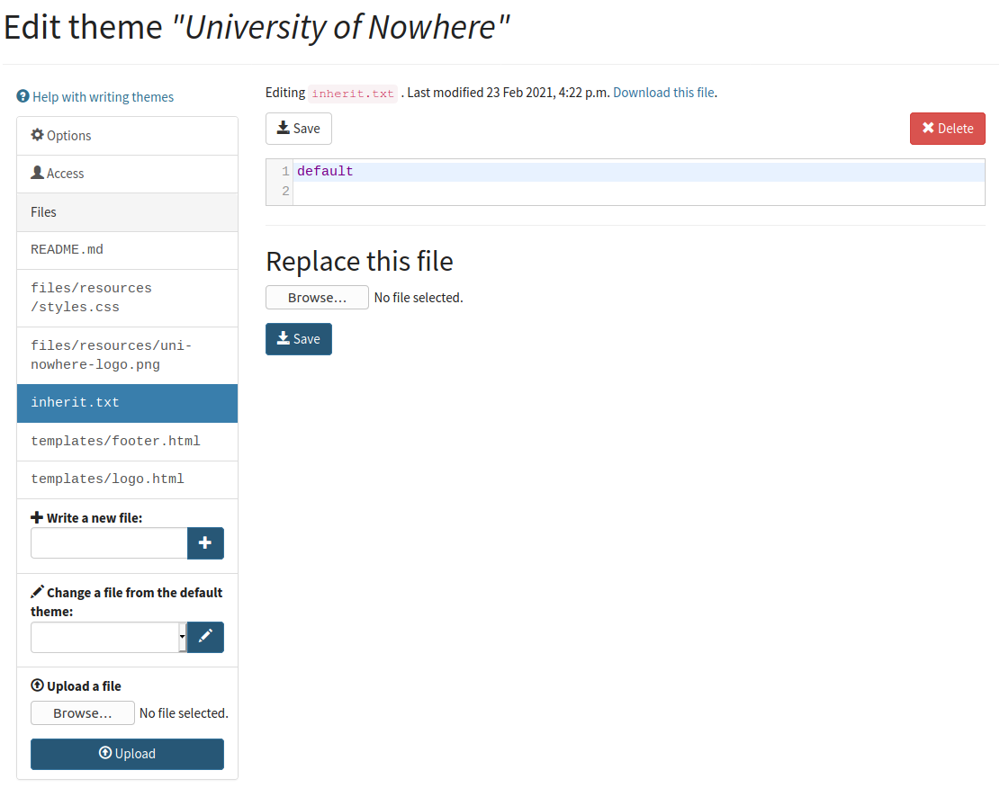
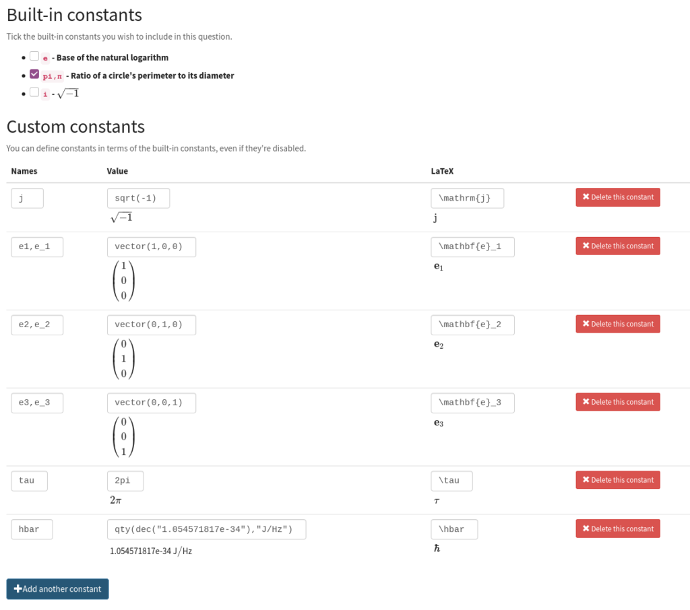
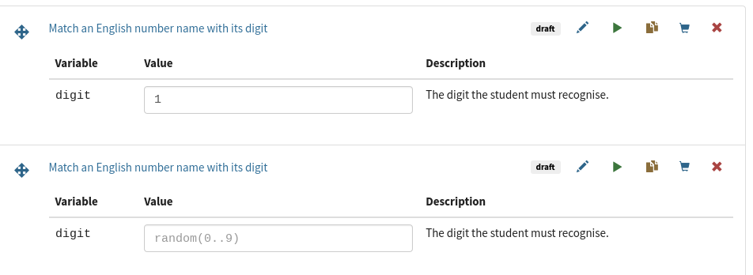
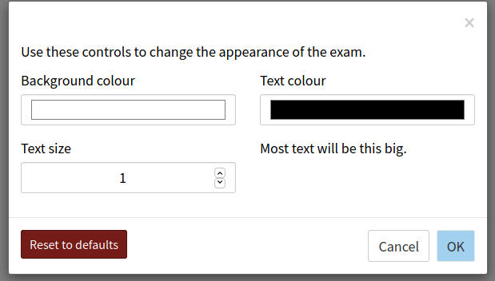
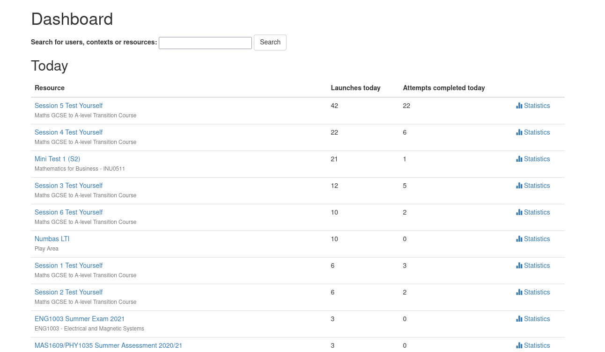
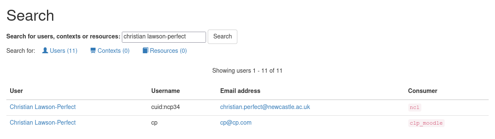
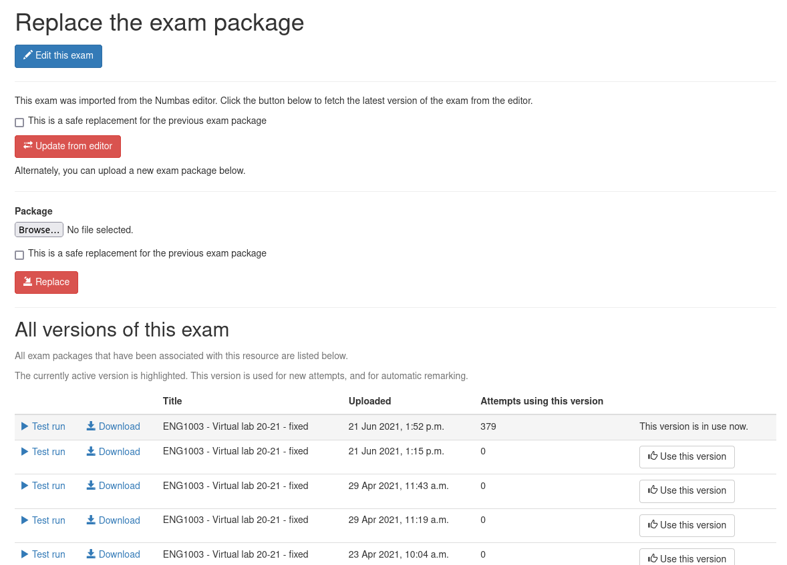
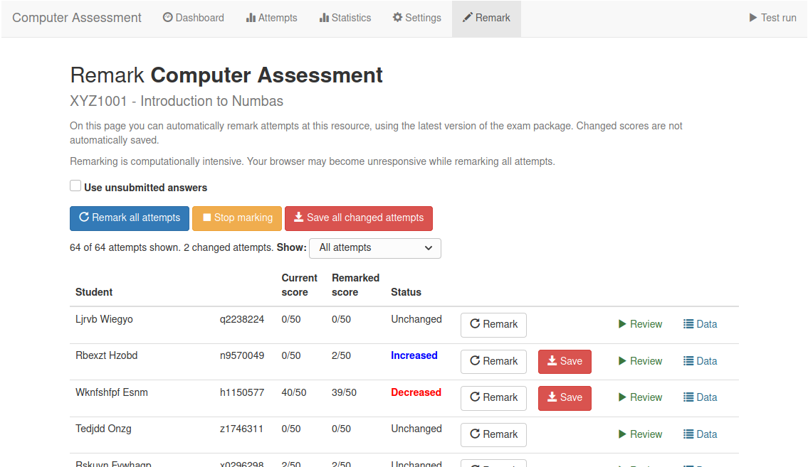
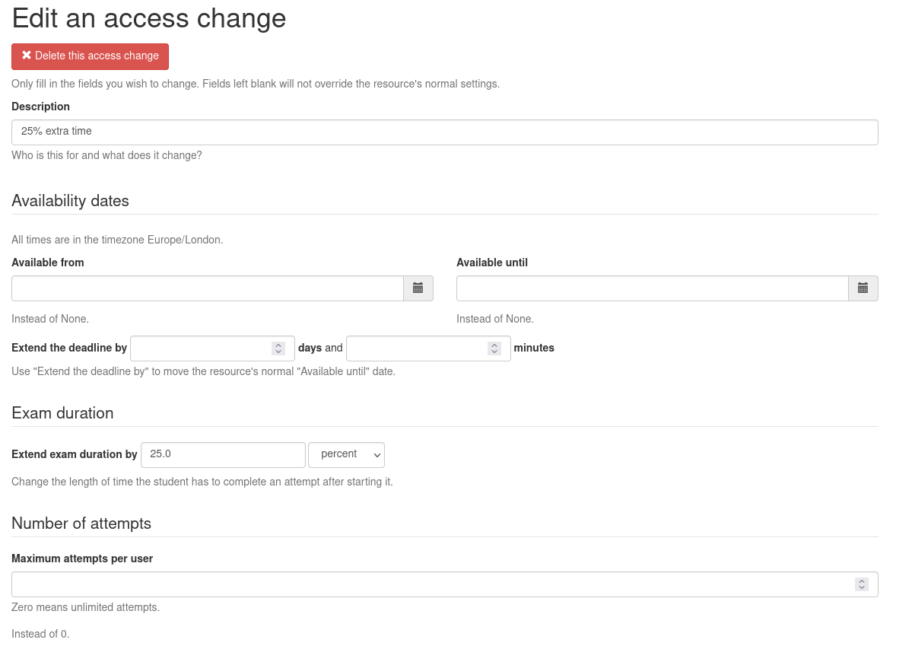

Christian Lawson-Perfect, Newcastle University

Albanian, Arabic, Chinese, Dutch, English, French, German, Hebrew, Indonesian, Italian, Japanese, Norwegian Bokmål, Polish, Portuguese, Spanish, Swedish, Turkish, Vietnamese
935 more users (+37%)
~200 more institutions (+30%)
2,180 items published (+24%)
Query GeoGebra in a marking algorithm
pos:
value(app,"A")
mark:
feedback("The point is at $"+latex(app,'A')+"$.");
correctif(pos=target_position)
interpreted_answer:
pos
Create a diagram with JessieCode
jessiecode(
600,600,
"""
A = point(-2,-2);
B = point(2,-2);
C = point(1,2);
circumcenter = circumcenter(A,B,C) << name: "circumcenter" >>;
circle(A,B,C) << strokeOpacity: 0.3 >>;
side_a = segment(B,C) << visible: false >>;
side_b = segment(A,C) << visible: false >>;
side_c = segment(B,A) << visible: false >>;
polygon(A,B,C);
M_a = midpoint(B,C) << visible: false >>;
M_b = midpoint(A,C) << visible: false >>;
M_c = midpoint(B,A) << visible: false >>;
median_a = line(A,M_a) << dash: 4, color: "gray", strokeOpacity: 0.3 >>;
median_b = line(B,M_b) << dash: 4, color: "gray", strokeOpacity: 0.3 >>;
median_c = line(C,M_c) << dash: 4, color: "gray", strokeOpacity: 0.3 >>;
centroid = intersection(median_a,median_b) << name: "centroid" >>;
p_a = perpendicular(side_a,A) << dash: 1, color: "gray", strokeOpacity: 0.3 >>;
p_b = perpendicular(side_b,B) << dash: 1, color: "gray", strokeOpacity: 0.3 >>;
p_c = perpendicular(side_c,C) << dash: 1, color: "gray", strokeOpacity: 0.3 >>;
orthocenter = intersection(p_a,p_b) << name: "orthocenter" >>;
euler_line = line(orthocenter, centroid);
""",
[
"axis": false
]
)
Written number (54 → "fifty-four")
USA and France data for Random person
Chained relations
a < b < c
Destructure variables
a,b,c = shuffle(1..9)

(or adaptive assessment)
A script chooses which questions to show.
More on this tomorrow


Accessibility guide for students
More little changes






As ever, more things than I have time to do.
Runtime: 141 open issues (+66), 61 "wishlist" (+18), 7 "good first issue" (+4).
Editor: 80 open issues (+44), 26 "wishlist" (+13), 8 "good first issue" (+7).
Help is very welcome!